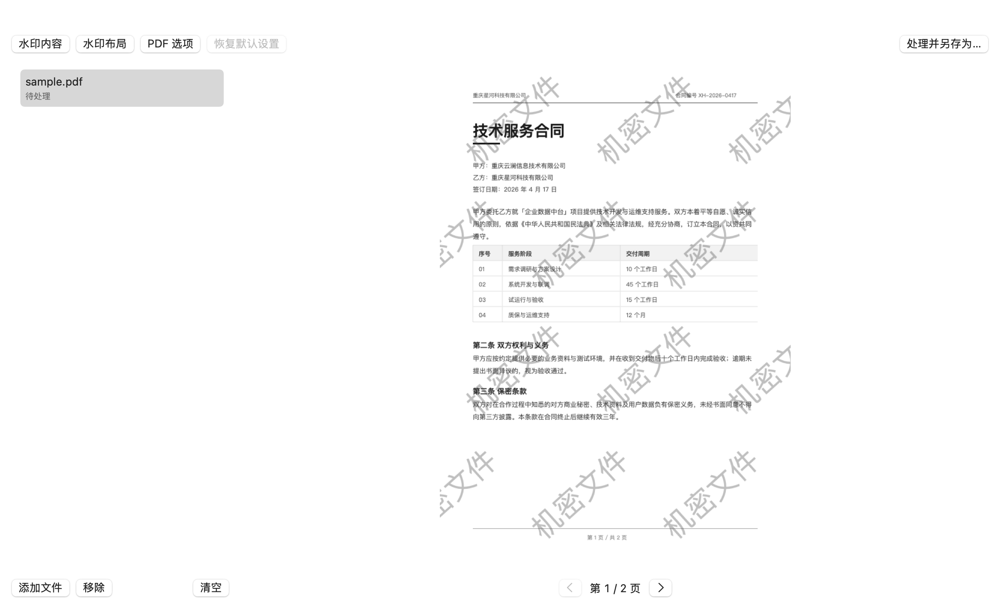
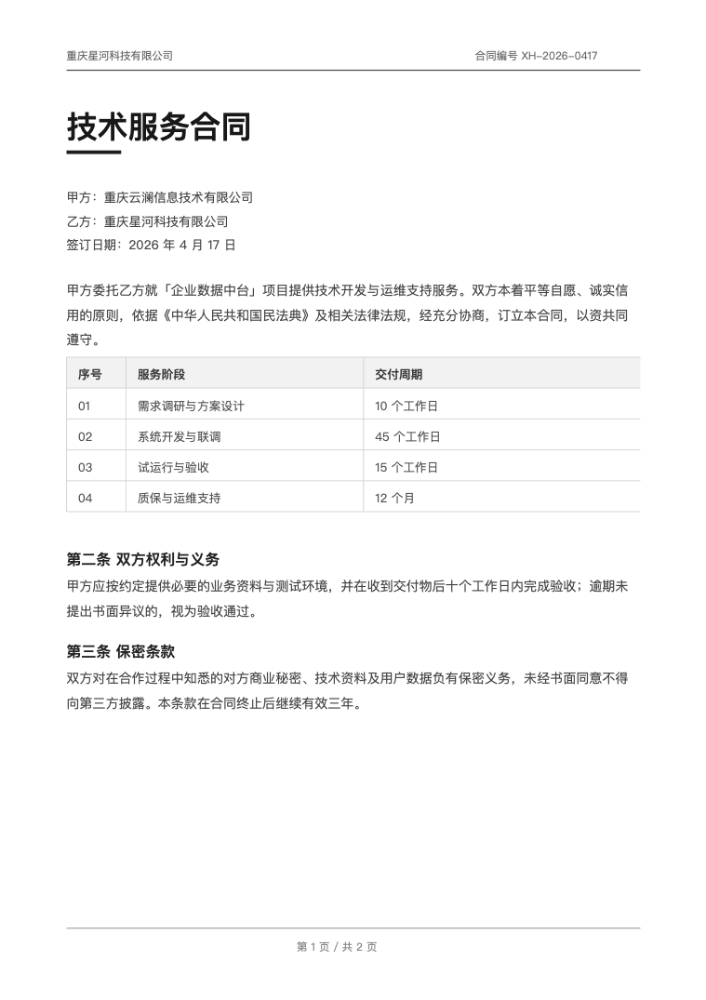
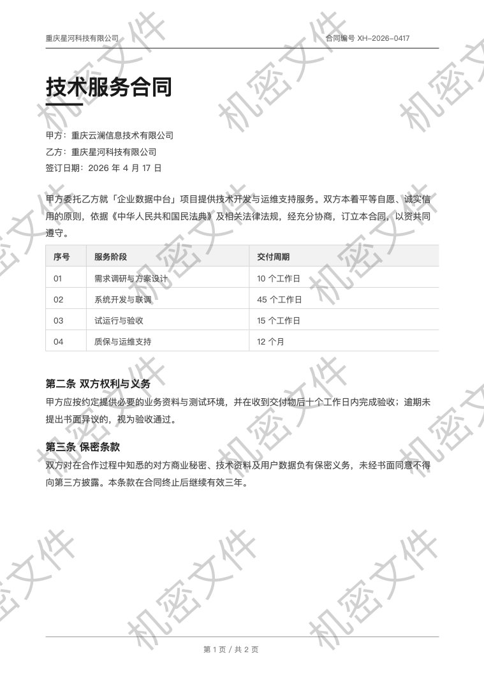
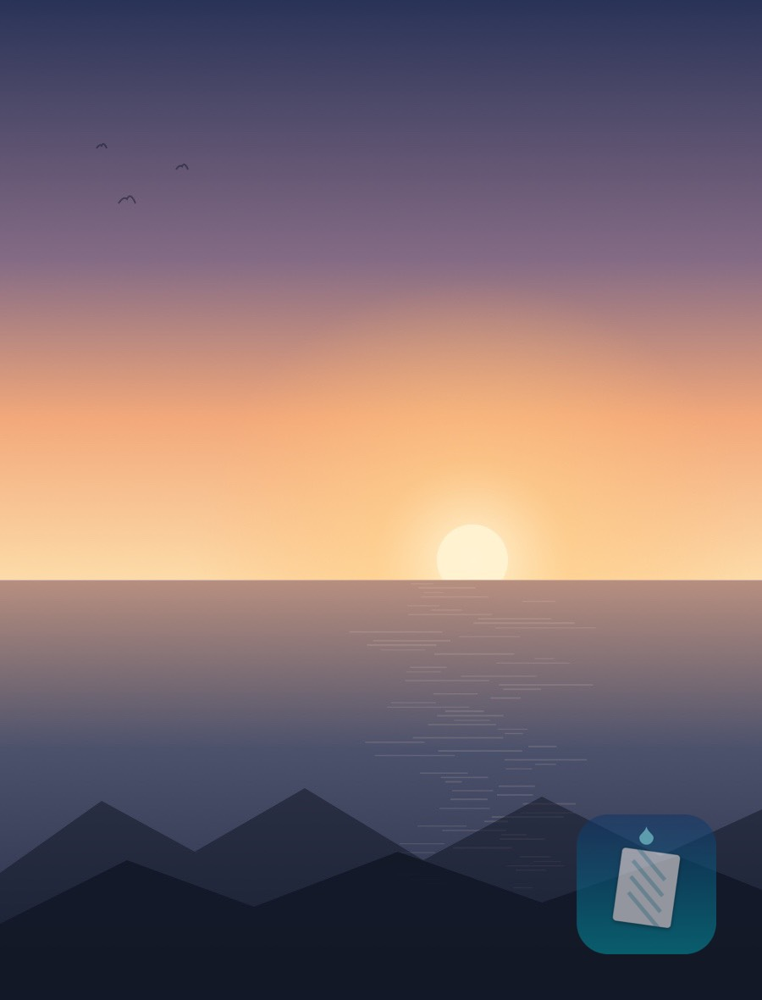

原生 macOS 应用，纯 Swift 编写，完全离线运行。 PDF 只做增量追加，原文件字节不动，书签、注释、表单全部保留；图片保持原格式与 EXIF。

功能
文字或图片两种水印，一套布局参数同时作用于图片与 PDF，边调边看，调好一口气批处理。
自定义内容、字体、字号、颜色、加粗、描边、字距与行距，支持多行文本。
选择 PNG、JPEG、TIFF 等任意图片作水印，按画布宽度百分比缩放，保留透明度。
参数一改，右侧立刻按最终效果重绘，所见即所得。PDF 可逐页翻看、定位到任意页。
一次拖入多个文件，输出到指定目录，自动追加 _wm 后缀，重名自动编号，绝不覆盖原文件。
文件拖到窗口任意位置即可加入。不支持的格式会明确提示，不会静默跳过。
政务与征信报告常见的「权限型加密」（打开不看密码、但禁止打印编辑）会自动解除后加水印。
图片的 EXIF、GPS 定位、IPTC 与 ICC 色彩描述文件整体回写，不物理旋转像素，也不改写方向标记。
全部、仅首页、奇数页、偶数页，或按 1,3,5-9 精确指定，跳过封面与附件。
所有参数自动记忆，下次启动沿用。想回到起点时，「恢复默认设置」会先列出将被改动的项。
效果
PDF 页面只追加一层水印内容流，页面本身原封不动；图片在原位图上叠一层半透明文字。 下面都是应用真实输出的结果。


示例：2 页 A4 合同，文字水印「机密文件」，42° 斜置、不透明度 0.30、整页平铺
1400 × 920 的 JPEG 原图，加「© 星河科技」斜向平铺。输出仍是 JPEG，画质档位与原图一致。

选一张 PNG 或 JPEG 作为水印，按画布宽度百分比缩放。平铺可以铺满整页， 关掉平铺则只落在指定锚点——这张图是把应用图标放在右下角、透明度 0.55 的效果。
支持范围
格式判断先看扩展名的统一类型标识，再嗅探文件头，所以把 PDF 改名成 .jpg 也骗不过它，反过来同样。
| 类型 | 支持情况 | 说明 |
|---|---|---|
| 完整支持 | 任意版本、任意页数；扫描件、含表单域、含注释与书签的文档均按增量方式处理。已旋转页面（/Rotate 90 / 270）会先摆正再铺水印。 |
|
| JPEG / JPG | 支持 · 有损 | 复用原图的量化表反推压缩档位，尽量贴近原始画质；不是「无损」，但不会二次降档。 |
| PNG | 支持 · 无损 | 保留透明通道与位深，输出仍是 PNG。 |
| HEIC / HEIF | 支持 · 接近无损 | 以最高质量编码写回，保留 EXIF、GPS 与色彩描述文件。 |
| TIFF / BMP / TGA / ICO 等 | 支持 | 凡是系统 ImageIO 能解码、且只有单帧的位图，都会保持原格式输出。 |
| GIF / 动态 WebP | 不支持（多帧） | 加水印会丢掉动画，应用会明确报错「动图加水印会丢失动画，暂不支持」，而不是悄悄改成静帧。 |
| Word / Excel / PPT | 不支持 | 会提示格式不支持。可先在办公软件里导出为 PDF，再加水印。 |
| 需要密码才能打开的 PDF | 需先解除 | 应用无法猜密码。仅「权限型加密」（空密码即可打开、只限制打印编辑）会自动解除，真正的密码保护会提示先解除。 |
参数
三个设置面板，悬浮在主窗口之外，调完关掉即可。下面列出的范围就是界面上滑杆的真实边界。
| 参数 | 范围 | 默认 | 说明 |
|---|---|---|---|
| 类型 | 文字 / 图片 | 文字 | 分段控件切换，两种配置各自独立保存 |
| 内容 | 任意文本 | 机密文件 | 支持多行，换行会按行距依次排布 |
| 字体 | 8 种 | 苹方 | 苹方 / 苹方粗 / 宋体 / 华文宋体 / 黑体 / Helvetica / Helvetica 粗 / Times |
| 字号 | 8 – 160 | 28 | 按 1000pt 参考画布等比换算，同一设置在大纸小纸上观感一致 |
| 颜色 | 任意 | 深灰 | 系统取色器，含透明度 |
| 加粗 | 开 / 关 | 关 | 在所选字族内切换字重 |
| 描边 | 0 – 6 | 0 | 大于 0 时显示描边颜色，浅底深字或深底浅字时提高可读性 |
| 字距 | -0.2 – 1.0 | 0 | 负值收紧，正值拉开 |
| 行距 | 0.8 – 3.0 | 1.25 | 多行文字的行间距倍数 |
| 图片素材 | 任意图片 | 未选择 | 选完显示缩略图，可一键清除 |
| 图片宽度占比 | 2% – 100% | 25% | 水印图片宽度相对于画布宽度 |
| 参数 | 范围 | 默认 | 说明 |
|---|---|---|---|
| 位置 | 9 个锚点 + 自定义 | 正中 | 四角、四边中点与中心；自定义时用横向、纵向两个 0–1 的比例定位 |
| 旋转 | -180° – 180° | 42° | 逆时针为正，斜置更不容易挡住正文 |
| 大小占比 | 2% – 100% | 28% | 单个水印宽度占画布宽度的比例 |
| 不透明度 | 0.02 – 1 | 0.30 | 整层透明度，文字与图片都生效 |
| 边距 | 0% – 25% | 6% | 占画布短边的比例，非平铺时决定水印离页边多远 |
| 平铺 | 开 / 关 | 开 | 关闭后只在锚点位置放一处 |
| 间距 | 1.0 – 4.0 | 1.15 | 相对水印自身外接框的倍数，1.0 为紧贴；平铺时会一路铺到画布外，保证四边不留空 |
| 错行排列 | 开 / 关 | 开 | 相邻行水平错开半格，网格感更弱 |
| 参数 | 范围 | 默认 | 说明 |
|---|---|---|---|
| 层级 | 内容之上 / 内容之下 | 内容之上 | 「之下」时水印被页面内容遮挡，适合需要保持正文绝对清晰的场景 |
| 页面范围 | 全部 / 仅首页 / 奇数页 / 偶数页 / 指定页 | 全部 | 指定页支持逗号与连字符表达式，见下 |
| 页码表达式 | 如 1,3,5-9 | — | 2- 表示第 2 页到末页；-4 表示第 1 到第 4 页；留空按全部处理 |
若所选范围内一页都没匹配上，应用会直接报错，而不是返回一份「成功但没有水印」的文件。
原理
大多数「加水印」工具会把 PDF 重新排版导出，图片被重压缩、书签与表单丢失、文件体积翻倍。 这里换了一条路。
/Prev 把新旧两段接起来。任何标准阅读器都认这种结构。
/Rotate 90 或 270 时，先把 MediaBox 换成阅读方向、去掉旋转标记、
把原内容流整体套一层变换矩阵——图片不重新编码、文字层不丢，水印坐标从此和肉眼看到的方向一致。
%PDF-1.7 1 0 obj … ← 原文件，逐字节不动 12 0 obj << /Type /Page … >> … xref trailer << /Size 60 >> startxref 48213 %%EOF % ——— 以下是应用追加的增量段 ——— 56 0 obj << /Type /Page /Contents [12 0 R 57 0 R] … >> ← 挂上水印层 57 0 obj << /Length … >> stream q 0.9 0 0 0.9 0 0 cm /GS1 gs BT /F1 28 Tf … (机密文件) Tj ET Q endstream endobj xref ← 只声明新增的几个对象 trailer << /Size 60 /Prev 48213 >> startxref 51902 %%EOF
用法
把 PDF 或图片拖到窗口任意位置，也可以点「添加文件」多选。支持一次几十个。
打开「水印内容 / 水印布局 / PDF 选项」三个面板，右侧预览实时跟着变。
单个文件弹出保存位置；多个文件只需选一个输出目录，文件名自动加 _wm。
列表里每个文件显示结果明细：页数、命中页数、追加体积或像素尺寸。
常见问题
不会。整个流程都是「读出原文件 → 在内存里生成新数据 → 写到新路径」，原文件始终以只读方式打开。
即使你把输出路径手动指定成原文件，应用也会拒绝写入并报错。
不会。增量更新只追加水印内容流和少量对象表，示例中两页 A4 文档只增加了 7.8 KB。
页数越多、水印层复用程度越高，增量占比越小——图片和字体都没被重新编码。
能。水印是独立的内容流，叠在扫描图上，扫描图本身不会被重新压缩，画质零损失。
那是权限型加密：文档不需要密码就能看，只是禁止打印、复制或编辑。这类文件应用可以自动解除并直接加水印。
如果确实需要输入密码才能打开，说明是真正的加密，请先用预览或 WPS 导出一份无密码版本再处理。
这类 PDF 的页面尺寸是横向的，但带着 /Rotate 270 标记，阅读器会把它转成竖向显示。
如果按原始坐标铺水印，就会铺到一个「看不见的区域」里，只在边缘露出一点。
应用现在会先把这类页面规范化（换 MediaBox、去掉旋转标记、原内容流外包一层变换），再按看到的方向铺满整页。
默认使用苹方，系统自带，不会缺字。若选了某个字族里没有的字形，系统会自动回退到可用字体，不会画出豆腐块。
当前安装包是 Apple 芯片（arm64）版本。Intel 机型需要通过 Rosetta 或自行从源码构建，暂未提供通用二进制。
应用未做 Apple 公证。在「访达」里右键点击应用图标，选择「打开」，在弹窗中再确认一次即可；之后可正常双击启动。
目前只有图形界面。核心逻辑是一个独立的 Swift 包（WatermarkCore），可以嵌入其他 macOS 项目直接调用。